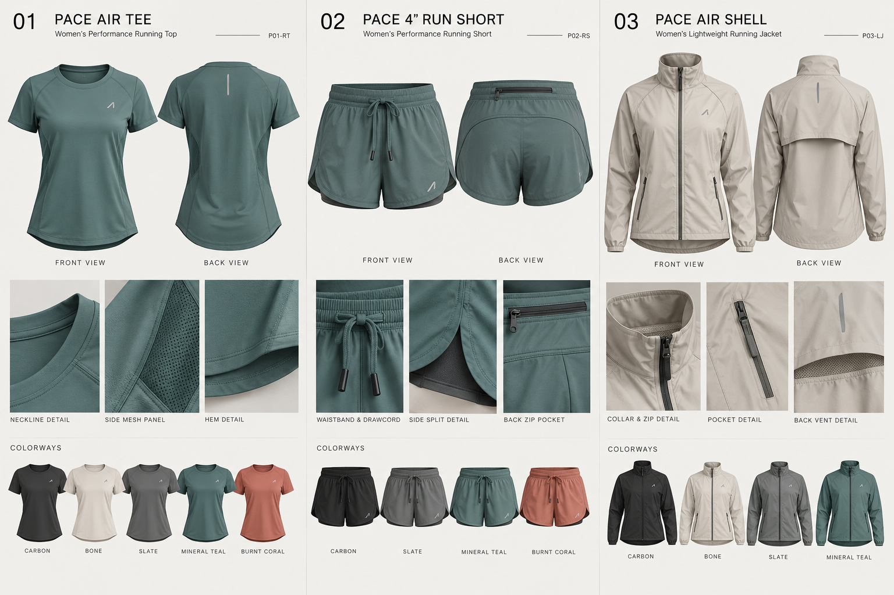
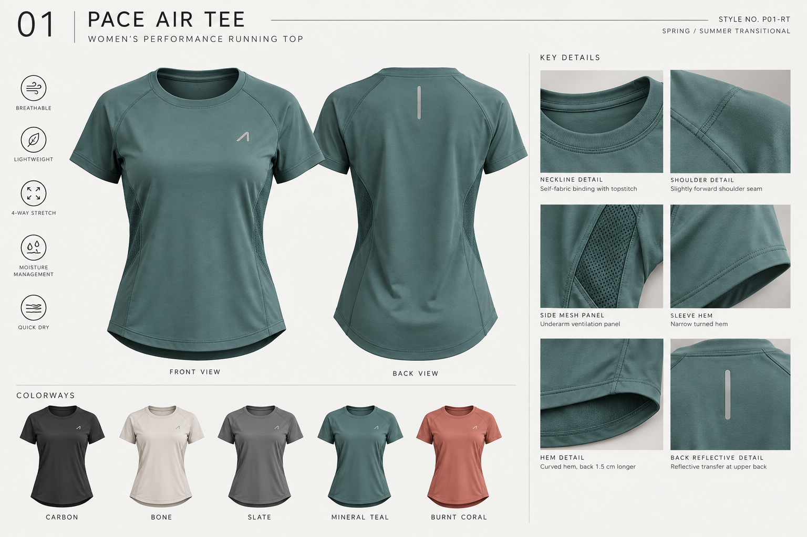
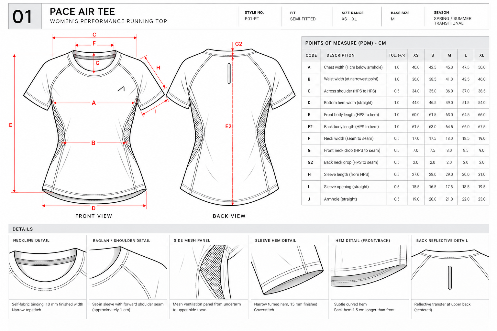
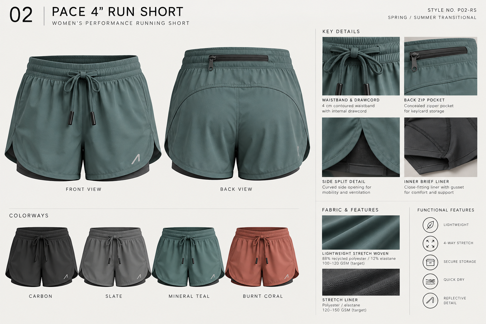
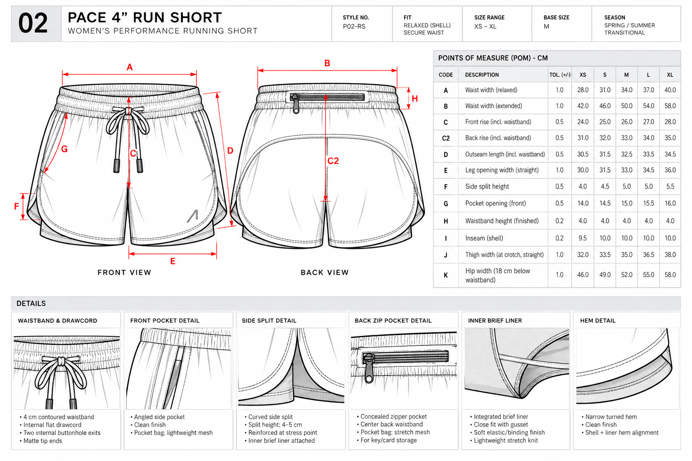
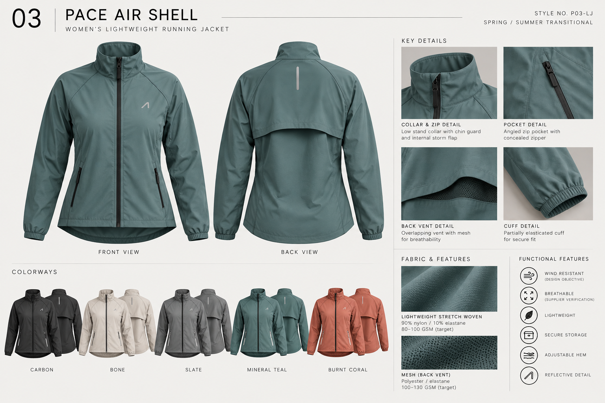
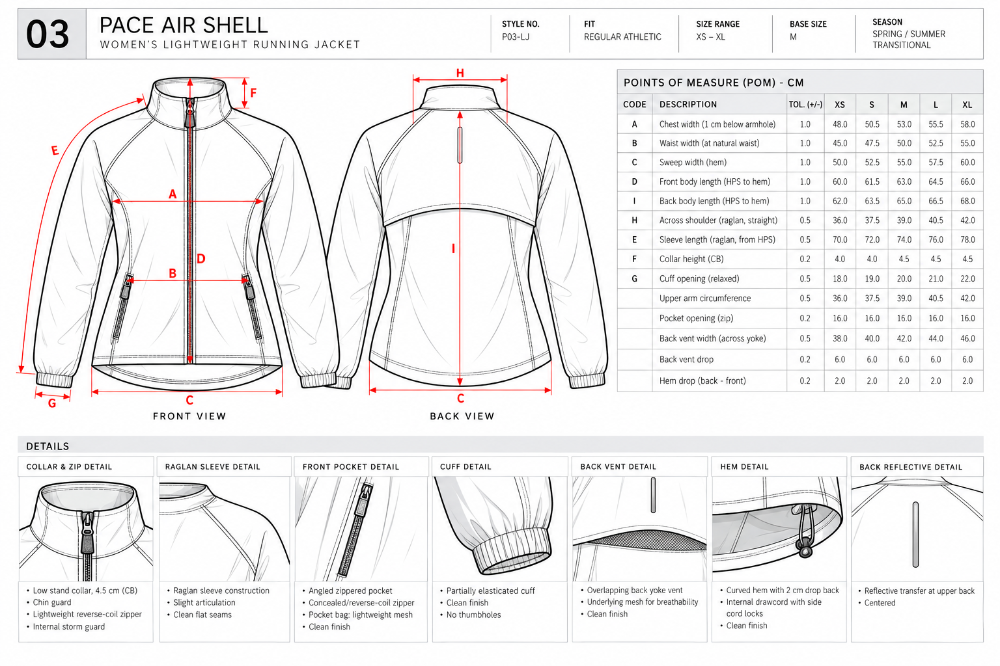

PACE / 01 ★
Independent Technical Apparel Development Project
Three pieces.
One running system.
PACE is a women’s performance-running capsule designed as a layered system for movement, ventilation, storage, and lightweight coverage.
- Category
- Women’s Performance Running
- Role
- Apparel Design · Technical Design · Product Development
- Range
- XS–XL · Base size M

01 / Overview
Designed for low-interruption movement.
Rather than treating each garment as an isolated design, I developed PACE as a cohesive layering system. Curved construction lines, restrained branding, lightweight materials, and purposeful details create a common language across all three pieces.
The capsule is designed around the recreational runner who moves between running, walking, light training, and daily activity. The goal was commercially approachable performance apparel, not specialized race equipment.
02 / Research
The recreational runner.
PACE is considered for women who run 3–5 times a week and use activewear beyond dedicated training. Their wardrobe moves from running → walking → light training → daily activity.
03 / Design direction
Move
Allow unrestricted movement without excess volume.
Breathe
Place ventilation where it has a functional purpose.
Carry
Integrate small-item storage without bulk.
Layer
Make every piece useful alone and together.
Simplify
Use details only when they support performance or clarity.
04 / Materials
Proposed sourcing, clearly framed.
Each material callout is a proposed project specification, not a verified supplier, lab, or production claim. The tee pairs fine-gauge performance jersey with stretch mesh; the short uses a lightweight stretch-woven shell with a stretch-knit liner; the shell explores a matte stretch woven/ripstop with mesh ventilation.
Final material composition, GSM, finish, performance, and color standards would require supplier confirmation and physical testing.
05 / P01-RT
PACE Air Tee
Lightweight ventilation without compression.

Design response
A semi-fitted silhouette follows the body without becoming compression-oriented. The curved hem gives subtle visual movement and added back coverage.
Key details
- Shallow crew neckline
- Set-in sleeve with forward shoulder seam
- Mesh side ventilation panel
- Centered rear reflective transfer

05 / P02-RS
PACE 4" Run Short
Movement, support, and low-bulk storage.

Technical centerpiece
The short brings fit, waistband construction, mobility, liner, and storage into a single product. A 4–5 cm curved side split supports stride without relying solely on stretch.
Key details
- 4 cm contoured waistband
- Internal flat drawcord
- Concealed center-back zip pocket
- Close-fitting brief liner

06 / P03-LJ
PACE Air Shell
Lightweight coverage with protected ventilation.

Layer + protect
The shell shifts to a raglan sleeve and regular athletic fit for layering ease. An overlapping upper-back yoke covers a mesh vent, balancing exterior coverage with passive ventilation.
Key details
- Low stand collar with reverse-coil zip
- Angled zip pockets with mesh bags
- Overlapping back vent
- Partially elasticated cuff and internal hem drawcord

07 / Technical development
Design intent → documentation → validation
Technical flats, construction callouts, proposed material specifications, POMs, grading logic, and manufacturer-facing documentation translate the visual direction into a development-ready starting point.
08 / Final capsule
One system, three responses to performance.
Targeted ventilation + lightweight next-to-skin comfort
Mobility + integrated support + secure storage
Layering + protected ventilation + lightweight coverage
PACE is an educational concept-development project. No physical samples, laboratory tests, supplier confirmations, or production results have been completed. Specifications shown are proposed starting points for future development and validation.